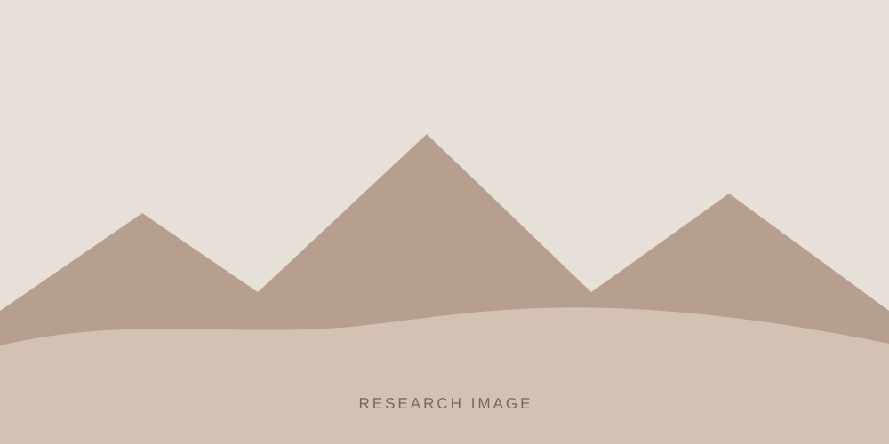

RESEARCH & PUBLICATIONS
Research

惑星地質学
惑星地質を勉強しています。火星の地形や堆積物を対象に、画像解析・地形解析・地球上のアナログ環境の調査を組み合わせ、惑星表層の地質プロセスと環境の理解を目指しています。
ここに、元のホームページの「study」本文を追加してください。研究の背景、対象、用いる手法、今後の展望を2〜4段落程度で記載できます。
Publications
各論文はタイトルから外部ページへリンクできます。新しい論文は先頭の <li> を複製して追加してください。
Refereed publications in international journals
-
Recognition and classification of Martian chaos terrains using imagery machine learning: A global distribution of chaos linked to groundwater circulation, catastrophic flooding, and magmatism on Mars
Shozaki, H., Sekine, Y., Guttenberg, N., and Komatsu, G., Remote Sensing, 2022. -
Development of longitudinal dunes under Pangaean atmospheric circulation
Shozaki, H. and Hasegawa, H., Climate of the Past, 2022.
Other publications
- ここに総説・著書・学会発表などを追加してください。